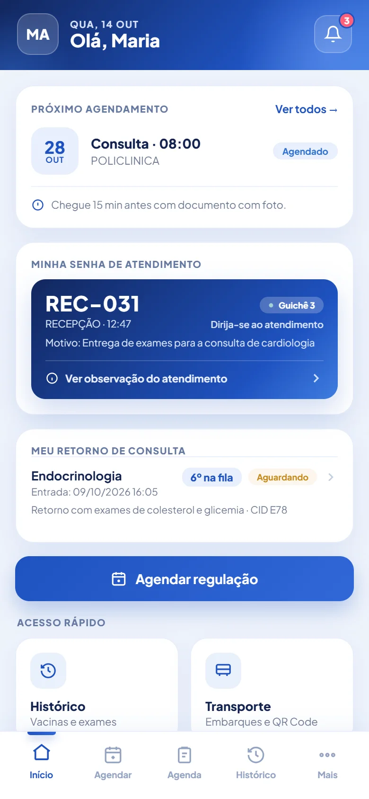
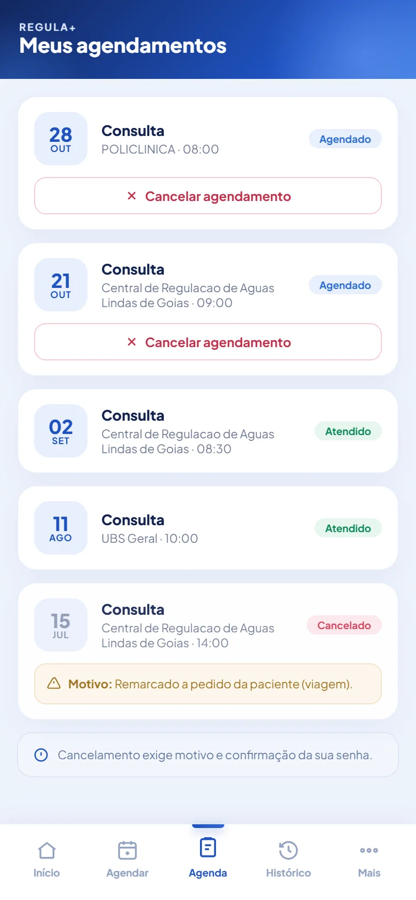
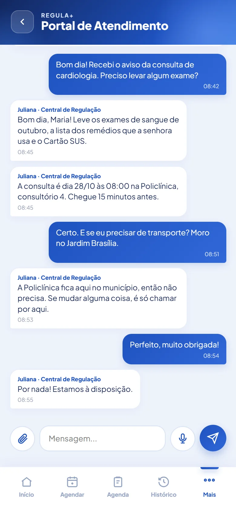

Resumo da saúde
Vacinas, exames e laudos e o histórico de atendimentos, num só lugar.
Regula+, o aplicativo do cidadão
O cidadão vê vacinas, exames, senhas e retornos, marca horário e conversa com a central. Tudo vem do mesmo cadastro usado pelas unidades.



O que o Regula+ faz
Vacinas, exames e laudos e o histórico de atendimentos, num só lugar.
O cidadão vê datas e horários livres, marca e acompanha em Meus agendamentos.
Acompanha a senha de atendimento e os retornos pelo celular.
Mensagens com o operador da central, com envio de arquivo.
Notificações no celular, avisos da Secretaria e um canal para reclamações.
O aceite do termo guarda CPF, versão, data, hora e IP.
Em preparação: entrada com a conta gov.br. O acesso já está pronto no aplicativo e aguarda a credencial oficial.
Conversa e avisos
Como funciona
Numa demonstração com dados fictícios, mostramos o app do cidadão e a central respondendo do outro lado.